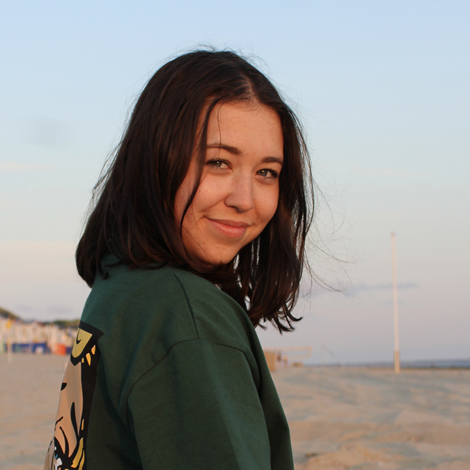
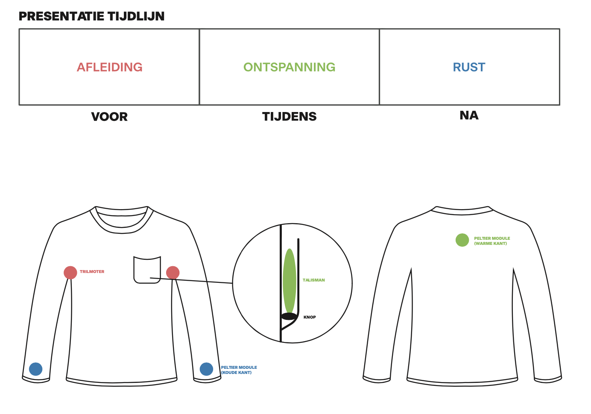
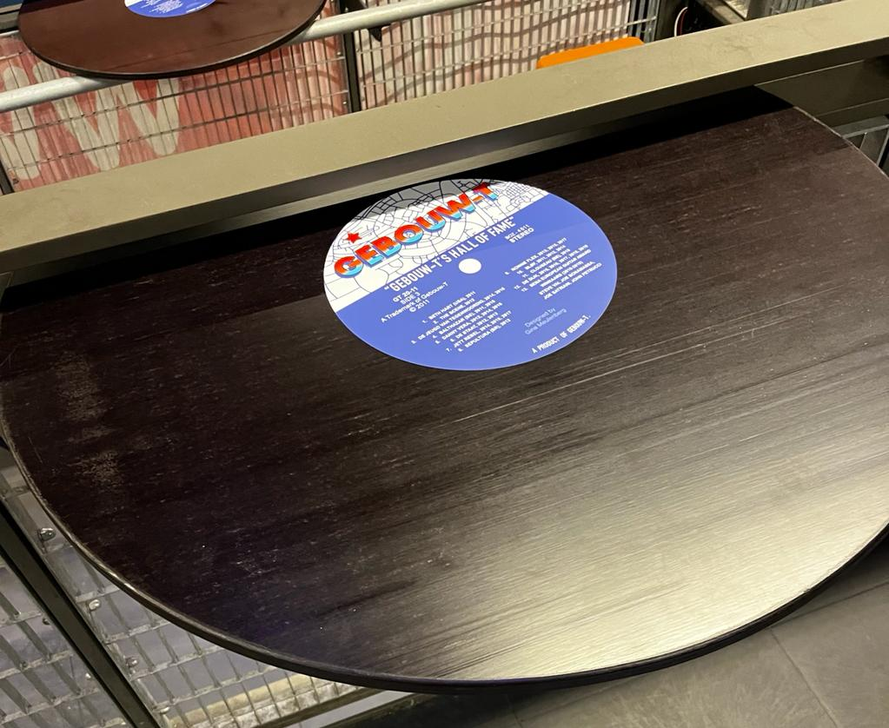

Stiltes, nee die bestaan niet als ik (Gina) in de buurt ben.
Valt er een stilte dan ben ik de eerste die ervoor zorgt dat er weer een ander onderwerp op de tafel komt.
De leiding nemen is mij zeker ook niet vreemd. Ik zet graag mensen aan het werk, maar dat betekent zeker niet dat ik zelf niks doe.
Je kan mij omschrijven als een open persoon. Er zijn niet veel dingen die ik niet met andere deel.
Dit komt ook naar voor in de onderwerpen die in aansnijdt in de projecten voor de studie Communicatie en Multmedia Design (CMD).
Ik gebruik hier namelijk vaak taboes. Hierbij kun je bijvoorbeeld denken aan zaken die met het vrouwelijk lichaam te maken hebben,
zoals ongesteldheid. Het is voor mij geen probleem om hier open over te praten.

Ik volg de studie CMD aan de hogeschool Avans in Breda.
CMD is een veelzijdige studie. Het ene moment ben je bezig het maken van website,
het andere moment maak je styleguides en weer een volgend moment bent je aan het werken met Arduino.
Omdat je met zo veel verschillende dingen bezig bent kan je er goed achter komen waar je interesses liggen en waar je goed in bent.
Creatief zijn op verschillende manieren zit in me.
Maar dit uitte zich vroeger natuurlijk op andere manieren dan waar we op de opleiding mee bezig zijn.
Hierbij kun je denken aan waterverf schilderen, mijn kamer herinrichten en kleien.
Op de middelbare school begon ik met het werken met Photoshop.
Nu zijn de skills die je nodig hebt voor illustrator, Premiere Pro, Lightroom en InDesign er ook bij gekomen door de opleiding CMD.
Ook in mijn vrije tijd vind ik het leuk om met deze programma’s te werken. Ik maak dan graag kaartje of edit mijn vakantiefilmpjes.
Recent Work

De werking van het shirt gevisualiseerd

De sensoren van de testpersonen
Het faalangst shirt
Ik heb een shirt ontworpen dat ervoor zou moeten zorgen dat je met faalangst zonder problemen zou kunnen presenteren.
Ik heb dit ontworpen, omdat ik vooral merkte dat ik last had van faalangst tijdens presentaties.
Ik wilde uitzoeken of ik hiervoor misschien iets zou kunnen ontwerpen waardoor ik makkelijker voor een klas zou durven presenteren.
Als je dit shirt aan hebt, krijg je verschillende soorten prikkels.
Voor je begint krijg je afleiding door middel van een trilmotoren die zich bij je oksels bevinden. Hierdoor ben je bijna verplicht om aan iets anders te denken dan de presentatie.
Tijdens de presentatie is het tijd voor ontspanning. Je stopt een talisman in het zakje van je shirt die er voor zorgt dat een schakelaar aan gaat en er een warm gevoel komt achter op je rug.
Dit is de plek waar je spieren normaal het meeste aanspannen bij angst en door warmte zullen de spieren gaan ontspannen.
Na de presentatie is het ben je klaar en opgelucht.
Je haalt je talisman uit je zak en dit zorgt ervoor dat het warme gevoel achter op je rug stopt en een koud gevoel komt bij je polsen.
Het is tijd om af te koelen.
Voordat ik het ontwerp had gemaakt heb ik veel onderzoek gedaan naar faalangst.
Ik heb bijvoorbeeld testpersonen laten presenteren in oncomfortabele kleding en in extreem comfortabele kleding, het publiek in hun ondergoed laten zitten en het testpersoon achter het publiek laten presenteren.
Dit allemaal terwijl ik de hartslag van de testpersonen in de gaten hield.
Ook heb ik verschillenden zintuigen uitgeschakeld tijdens sommige presentaties.
Zo hebben er testpersonen geblinddoekt gepresenteerd, maar ook met een geluidsdichte koptelefoon.

LP tafel

Poster

Banner
Stage bij Gebouw-T
In 2021 heb ik een half jaar stage gelopen bij Gebouw-T. Dat is een poppodium in Bergen op Zoom. Hier werd mij gevraagd om verschillende dingen te doen zoals: posters, banners en programmaboekjes ontwerpen, het bedenken en maken van de social media posts, het video editten van een reclame in de bioscoop. Wat ik ook leuk vond om te doen was de sticker te ontwerpen voor op de tafels op het balkon.
Het was de bedoeling dat de tafel ging lijken op een LP. Ik heb na lang brainstormen en proberen gekozen om de LP van het label Motown na te maken en het een vleugje Gebouw-T te geven.
Tijdens deze stage heb ik geleerd om met verschillende disciplines te werken. Ik heb vooral veel samengewerkt met het marketingteam. Ook heb ik in het half jaar mijn Photoshop, Illustrator, InDesign en Première Pro verbeterd.
Klik op de foto hierboven om meerdere werken te zien!
Video die in de bioscoop draaide en een video die draaide in de lockdown

Eindwerk
Poster
HealthShirt
Het HealthShirt is speciaal gemaakt voor verlamde mensen die niet kunnen praten.
Het shirt is voor alle leeftijden en ziet er gewoon uit als een normaal shirt.
In het shirt zitten drie verschillende sensoren die zijn verbonden met de arduino.
Het gaat om de hartslagsensor, de zweetsensor en de warmtesensor.
De persoonlijke verzorger wordt gealarmeerd doordat de kamer van kleur verandert.
Als de hartslag verhoogd, verandert de kamer in de kleur groen.
Als de lichaamstemperatuur te hoog is, verandert de kamer in de kleur blauw.
De kamer verandert in de kleur geel/oranje wanneer het zweetpercentage te hoog is.
Doordat de verlamde persoon niet kan voelen doet het shirt dat voor hem/haar.
Het shirt is het medium, de verlamde is de zender en de verzorger is de ontvanger.
Eindwerk
Verbonden door ongesteldheid (menstruatiecups)
Proces
Periodbuddy's
Als twee vrouwen op dezelfde tijd ongesteld zijn dan voel je een band. Je gaat beiden door de maandelijkse periode heen waarin je last hebt van je baarmoeder.
Ook gaan je hormonen en daardoor je stemming alle kanten op. Doordat je tegelijkertijd ongesteld bent kan je samen over je kwaaltjes praten en samen lekker zeuren.
Je kan met een man ook over je ongesteldheid praten. Die zullen misschien empathie tonen, maar volledig begrijpen wat je voelt doen ze nooit.
In dit werk zie je twee tampons waarbij er een knoop zit in de touwtjes.
De knoop staat symbool voor de verbinding tussen de vrouwen tijdens deze maandelijkse periode.
Dit is een verbinding die mannen nooit zullen voelen.

Oma
Proces
Oma
Mijn tand viel een week na mijn oma's overleiden uit mijn mond.
Dit was iets wat ik als 6 jarig meisje graag aan mijn oma had willen vertellen, maar dat kon helaas niet meer.
Zo'n 13 jaar verder zijn er zoveel verschillende dingen gebeurd die ik haar nog had willen vertellen, maar ik ben niet de enige die haar nog veel wilt vertellen.
Zo heb ik ook nog mijn ouders en mijn twee zussen die nog veel aan haar kwijt willen. Dit heb ik verwerkt in een mini film.

Eindwerk
Verschillende tepels op hout
Tepeltafel
Een tepel van een man op internet mag, maar als een vrouw haar tepel op het internet zet komt er al snel haat,
kritiek of wordt de foto verwijderd.
Kijk de video en zie waarom een tepel best veel met een tafel gemeen heeft.

Eindwerk 1

Eindwerk 2
Foto van Big Mac Salad
McFlurry als yoghurt
Eerste foto van Big Mac Salad
Hoe de Big Mac Salad er voor de camera's uit ziet
Wat de overheid zou maken om te voorkomen dat mensen ongezond eten
Big Mac Salad
Stel dat camera’s kunnen bodyshamen,
dan zou je misschien niet meer naar binnen mogen bij de McDonalds omdat de camera je te dik vindt.
Restaurants zouden er dan voor zorgen dat ongezond eten er gezond uit ziet. Bijvoorbeeld door ongezond eten eruit te laten zien als een salade.
Dit zouden de restaurants doen om er toch voor te zorgen dat ook mensen die er ongezond uit zien wel naar binnen mogen omdat ze hun eten willen verkopen.

Eindwerk
Skin van 3D model
Skin op het 3D model
Immersive Storytelling
Tijdens het maken van een game heb ik leren werken met Blender. Ik heb de skins gemaakt voor de 3D modellen die in de game liepen.
Ook heb ik mijn groepje moeten vertellen welke stijl ze moesten aanhouden, omdat ik de Art Director was in het team.
In deze module heb ik echt geleerd om goed te kunnen samenwerken. We moesten ook een interactive storyboard maken waar we zelf het verhaal van moesten verzinnen.
Interactive storyboard
en
de game!
Contact
Bent u geintereseerd om met mij te werken of heeft u vragen?


{kind=link}
{kind=link}